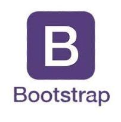

Technology Stack of Freepik Downloader
The Freepik Downloader, hosted on Vercel, is a web application that allows users to download premium stock images from Freepik without watermarks. Based on the website's architecture and functionality, these are the technologies used to develop this application:
Summary:
- Frontend: React, CSS, HTML5
- Backend: Node.js, API Integration
- Deployment:
Vercel - Other Technologies: Git

Technology Stack of Combinations Generator
The Combinations Generator website is a tool that generates combinations of items from a given set. It allows users to input a set of items and a desired combination length, and then generates all possible combinations of those items of that length.
The site can be useful for a variety of purposes, such as:
Generating permutations for statistical analysis or data science applications
Creating combinations of items for testing or simulation purposes
Helping with puzzle or game solutions that involve combinations of items.
Summary:
- Frontend: React Hooks (v17.0.2), Material-UI (v4.12.3), TypeScript (v4.1.3), React (v17.0.2)
- Backend: Node.js, Netlify Functions (v3.3.0):
- Deployment:
Netlify - State ManagementRedux (v4.1.2):,Redux Toolkit (v1.6.1)
- Other Technologies:mathjs (v6.2.5), lodash (v4.17.21)

As a skilled web developer, I am proficient in Bootstrap, a popular front-end framework that enables me to create responsive, mobile-first, and visually appealing websites with ease. My expertise in Bootstrap allows me to utilize its pre-built components, grid system, and customization options to build fast, consistent, and scalable web applications.

As a seasoned web developer, I am well-versed in JavaScript, the language of the web. My proficiency in JavaScript enables me to create dynamic, interactive, and engaging web experiences. I am skilled in utilizing JavaScript to manipulate DOM elements, handle events, and create responsive web applications that provide an optimal user experience.

As a skilled web developer, I am experienced in React, a popular JavaScript library for building user interfaces. I create reusable UI components, manage state changes, and optimize rendering for fast and efficient web applications, utilizing React Hooks, Context API, and other advanced features.

I am a skilled web developer with expertise in Vue.js. I create robust, scalable, and maintainable web applications using its component-based architecture, reactive components, and robust ecosystem. I utilize Vue.js features such as Vue Router, Vuex, and Vue CLI to build fast and efficient web applications.

I efficiently manage code repositories with my proficiency in Git. I create, manage, and track changes to codebases, collaborate with teams, and maintain a record of changes using Git features like branching, merging, and rebasing.

I bridge the gap between dev and ops teams with my knowledge of DevOps practices. I implement CI/CD/CM for fast, reliable, and secure web app delivery, utilizing tools like Jenkins, Docker, and Kubernetes to automate and optimize the development lifecycle.